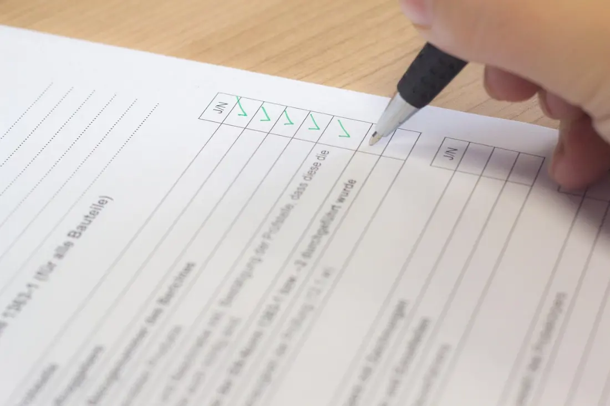

Documentos esenciales para viajar fuera de México con menores de edad
Para que un menor de edad viaje al extranjero, es necesario contar con ciertos documentos, como el pasaporte, el acta de nacimiento y, en algunos casos, una carta de autorización de los padres. Estos documentos son cruciales para garantizar que el viaje se realice sin problemas y que el menor esté protegido legalmente durante su estancia en el extranjero.
Es importante verificar los requisitos específicos del país de destino, ya que pueden variar. Asegúrate de tener toda la documentación en regla para evitar inconvenientes durante el viaje. La falta de documentación adecuada puede resultar en la negación de entrada al país o en problemas legales.
Documentación necesaria para el viaje
Los documentos esenciales que se deben presentar al viajar con un menor de edad incluyen:
- Pasaporte: Es el documento más importante para viajar al extranjero. Debe ser válido y tener suficiente tiempo de vigencia. Asegúrate de solicitarlo con antelación, ya que el proceso puede tardar varias semanas.
- Acta de nacimiento: Este documento es necesario para comprobar la identidad y la edad del menor. Es recomendable llevar una copia certificada. En algunos casos, puede ser necesario presentar una traducción oficial si el documento está en otro idioma.
- Carta de autorización: En caso de que solo uno de los padres viaje con el menor, se debe presentar una carta de autorización firmada por el otro padre, autorizando el viaje. Esta carta debe incluir detalles como el destino, las fechas del viaje y la información de contacto de ambos padres.
- Visas: Dependiendo del país de destino, puede ser necesario obtener una visa para el menor. Verifica los requisitos específicos del país que se va a visitar, ya que algunos países tienen políticas estrictas sobre la entrada de menores.
- Documentos adicionales: Algunos países pueden requerir documentos adicionales, como certificados de vacunación o pruebas de salud. Es importante informarse sobre estos requisitos antes de viajar, especialmente en el contexto de la pandemia de COVID-19.
Es esencial que los adoptantes se aseguren de que todos los documentos estén actualizados y sean legibles, ya que cualquier error o falta de información puede retrasar el proceso de viaje. Además, es recomendable llevar copias digitales de los documentos en caso de que se pierdan durante el viaje.
Recuerda que la planificación adecuada puede marcar la diferencia en la experiencia de viaje, asegurando que tanto los padres como los menores disfruten de un viaje sin contratiempos.
Recomendaciones para el viaje
Además de tener la documentación necesaria, es importante seguir algunas recomendaciones para asegurar un viaje seguro y sin contratiempos:
- Verifica los requisitos de entrada y salida del país de destino, incluyendo restricciones por COVID-19. Mantente informado sobre las políticas de salud pública que puedan afectar tu viaje.
- Realiza copias de todos los documentos importantes y guárdalas en un lugar separado de los originales. Considera también enviar copias a un correo electrónico o almacenarlas en la nube para acceder a ellas fácilmente.
- Informa al menor sobre el viaje y asegúrate de que esté preparado para la experiencia. Habla sobre lo que pueden esperar en el aeropuerto y durante el vuelo.
- Considera la posibilidad de contratar un seguro de viaje que cubra a los menores en caso de emergencias médicas o imprevistos. Esto puede proporcionar tranquilidad durante el viaje.
- Planifica con anticipación y asegúrate de tener tiempo suficiente para resolver cualquier problema que pueda surgir antes del viaje. Esto incluye llegar al aeropuerto con tiempo suficiente para evitar el estrés.
- Recuerda que la planificación adecuada puede marcar la diferencia en la experiencia de viaje, asegurando que tanto los padres como los menores disfruten de un viaje sin contratiempos.
Consecuencias de no tener la documentación adecuada
No contar con la documentación necesaria puede resultar en la negación de acceso al avión o al país de destino. Es fundamental asegurarse de que todos los documentos estén en regla para evitar inconvenientes que puedan afectar el viaje. Las aerolíneas y las autoridades fronterizas son estrictas en cuanto a los requisitos de documentación.
La falta de documentación adecuada no solo puede causar estrés y ansiedad, sino que también puede afectar los planes de viaje y la experiencia general de la familia.
Impacto emocional del viaje
Viajar con un menor puede ser una experiencia emocionalmente intensa tanto para el niño como para los padres. Es importante reconocer y manejar las emociones que pueden surgir durante el viaje. Los niños pueden experimentar ansiedad por la separación, miedo a lo desconocido o incluso emoción por la aventura que les espera.
Los padres deben estar preparados para brindar apoyo emocional y ayudar a sus hijos a adaptarse a las nuevas situaciones. Mantener una comunicación abierta y honesta sobre el viaje puede ayudar a calmar los nervios del menor. Es recomendable hablar con el menor sobre lo que puede esperar durante el viaje y asegurarse de que se sienta seguro y amado en todo momento.
Considera la posibilidad de llevar objetos familiares que puedan brindar consuelo al menor durante el viaje, como un juguete o una manta.
Recursos y apoyo para padres que viajan con menores
Existen numerosos recursos y organizaciones que pueden proporcionar apoyo a los padres que viajan con menores. Estos pueden incluir grupos de apoyo, talleres y recursos en línea que ofrecen información y orientación sobre cómo viajar con niños. Investigar y conectarse con estas comunidades puede ser beneficioso.
Los padres pueden beneficiarse de la conexión con otros que han pasado por experiencias similares, lo que puede ayudar a reducir la sensación de aislamiento y proporcionar un espacio seguro para compartir preocupaciones y éxitos. Además, muchos aeropuertos y aerolíneas ofrecen servicios especiales para familias que viajan con niños.
Considera unirte a foros o grupos en redes sociales donde se discutan experiencias de viaje con niños, ya que esto puede proporcionar información valiosa y consejos prácticos.
Preparativos para el viaje
Antes de emprender el viaje, es fundamental realizar una serie de preparativos para garantizar que todo transcurra sin problemas. Esto incluye revisar la documentación, planificar la ruta y asegurarse de que el menor tenga todo lo que necesita para el viaje. También es recomendable llevar entretenimiento para el menor durante el trayecto, como libros, juegos o dispositivos electrónicos con contenido adecuado.
Considera hacer una lista de verificación de los elementos necesarios para el viaje, incluyendo ropa adecuada, artículos de higiene personal y cualquier otro elemento que el menor pueda necesitar. Esto ayudará a evitar olvidar algo importante y asegurará que el viaje sea lo más cómodo posible.
Además, asegúrate de tener un plan de contingencia en caso de que surjan imprevistos, como retrasos en los vuelos o cambios en el itinerario.
Consejos para un viaje seguro
Para asegurar un viaje seguro y cómodo, considera los siguientes consejos:
- Siempre mantén un contacto visual con el menor en el aeropuerto y durante el vuelo. Esto es especialmente importante en áreas concurridas.
- Enseña al menor a identificar a los adultos responsables y a no alejarse de ellos. Asegúrate de que el menor sepa a quién acudir si se siente perdido.
- Establece un plan en caso de que se separen, como un lugar de encuentro o un número de contacto. Practica este plan con el menor antes del viaje.
- Asegúrate de que el menor sepa cómo comportarse en situaciones de emergencia. Esto incluye saber cómo pedir ayuda y reconocer a las autoridades.
- Considera la posibilidad de llevar un localizador GPS o un dispositivo de seguimiento para el menor, especialmente en lugares concurridos.
Consideraciones legales al viajar con menores
Es importante estar al tanto de las leyes y regulaciones que rigen los viajes con menores, ya que pueden variar según el país de destino. Algunos países pueden tener requisitos específicos sobre la documentación necesaria para los menores, así como restricciones sobre quién puede viajar con ellos. Investigar estas leyes antes de viajar puede evitar problemas en el futuro.
Los padres deben investigar las leyes del país de destino y asegurarse de cumplir con todos los requisitos para evitar problemas en el momento de abordar el vuelo o al llegar al destino. Esto incluye verificar si se necesita una carta de autorización o cualquier otro documento adicional.
Consulta con la embajada o consulado del país de destino para obtener información actualizada sobre los requisitos de entrada y salida para menores.
Salud y seguridad durante el viaje
La salud y seguridad del menor son de suma importancia durante el viaje. Asegúrate de llevar un botiquín de primeros auxilios y cualquier medicamento necesario que el menor pueda necesitar durante el viaje. Esto incluye medicamentos para alergias, fiebre o cualquier condición médica preexistente.
Además, es recomendable consultar con un médico antes de viajar, especialmente si el menor tiene condiciones de salud preexistentes o si se va a viajar a un país donde se requieren vacunas específicas. Mantener un registro de las vacunas del menor también puede ser útil durante el viaje.
Considera llevar una lista de contactos médicos en el país de destino, así como información sobre hospitales o clínicas cercanas.
Gestión de crisis durante el viaje
Es fundamental estar preparado para manejar cualquier crisis que pueda surgir durante el viaje. Esto incluye tener un plan de acción en caso de emergencias, como pérdida de documentos, enfermedad del menor o cualquier otro incidente inesperado. Mantener la calma y actuar con rapidez puede ayudar a resolver situaciones difíciles.
Los padres deben estar informados sobre los servicios de emergencia disponibles en el país de destino y tener a mano los números de contacto necesarios. Además, es útil tener una lista de contactos de emergencia que incluya a familiares y amigos que puedan ayudar en caso de necesidad.
Practica la gestión de crisis con el menor, explicándole qué hacer en caso de que se pierda o enfrente una situación difícil.
Comunicación durante el viaje
Mantener una buena comunicación es clave para un viaje exitoso. Asegúrate de que el menor sepa cómo comunicarse contigo en caso de que se pierda o necesite ayuda. Esto puede incluir tener un teléfono móvil o una tarjeta con información de contacto.
Es recomendable establecer un sistema de comunicación claro, como un código o una señal, para que el menor se sienta seguro y sepa cómo actuar en situaciones de emergencia. Practicar este sistema antes del viaje puede ayudar a que el menor se sienta más seguro.
Considera la posibilidad de utilizar aplicaciones de mensajería que permitan la localización en tiempo real, lo que puede ser útil en áreas concurridas.
Actividades para el viaje
Planificar actividades para realizar durante el viaje puede ayudar a mantener al menor entretenido y hacer que la experiencia sea más agradable. Considera incluir:
- Juegos de viaje que se pueden jugar en el automóvil o en el avión. Esto puede incluir juegos de palabras, adivinanzas o juegos de observación.
- Libros o audiolibros que sean apropiados para su edad. Esto no solo entretiene, sino que también fomenta la lectura y la imaginación.
- Películas o programas de televisión descargados en dispositivos electrónicos. Asegúrate de que el contenido sea adecuado para la edad del menor.
- Actividades interactivas, como dibujar o escribir un diario de viaje. Esto puede ayudar a que el menor se sienta más involucrado en la experiencia del viaje.
- Considera llevar juegos de mesa o cartas que sean fáciles de transportar y jugar en cualquier lugar.
Recuerda que la planificación de actividades puede hacer que el viaje sea más divertido y memorable para el menor.